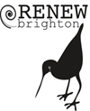

Wifi for Humanity Christchurch hosts the Rails Girls movement this March in the pleasant beach-side village of New Brighton. During the free two-day workshop we'll dive into the magical world of Ruby on Rails.
Wow! Due to demand we've had to close registrations. Thanks to everyone who has applied, we'll be in touch shortly.
You learn designing, prototyping and coding with the help from our coaches.
You need your own laptop, curiosity and a sprinkle of imagination!
Want to help? We are looking for volunteers and Rails coaches. Email us.
| 18.30 - 20.30 |
Installation partyGet know the attendees a little bit before hand. Bring your laptop if you can, so we can install Ruby on Rails for you. |
|---|
| 9:00 - 10:00 |
Registration, coffee and installation festDuring the morning we'll install Ruby on Rails on your computer. |
|---|---|
| 10:00 - 10:15 |
WelcomeOutline of the day & word from sponsors |
| 10:20 - 10:45 |
How web apps work |
| 10:50 - 11:10 |
Tryruby.orgLet's get coding! |
| 11:10 - 13:00 |
WORKSHOPJumpstart your first web application |
| 13:00 - 13:30 | Lunch |
| 13.30- 13:45 |
Bentobox - Understanding Web AppsRecap of what we've learned and how it all fits together. |
| 13:45 - 14:30 |
Designing your web app |
| 14:30 - 16:30 |
WORKSHOPExtend your application. |
| 20:00 - |
AfterpartyOpen for everyone, meet cool people interested in tech. |
Location:
Central New Brighton School
150 Seaview Road, New Brighton, Christchurch 8061
Corner Beresford and Union Streets, New Brighton
Parking: free, heaps of street and parking lot spaces.
Bus routes: 5 (Horny-Southshore)
40 (Middleton-Wainoni)
60 (Hillmorten-Parklands)
View Larger Map
Rails Girls Christchurch/New Brighton is co-organized with our awesome partners.
Want to help? We're looking for partners & sponsors for the non-profit event! Email us!
Sponsored and organized by Wifi for Humanity

Supported by Renew New Brighton
Supported by Wifi Guys
How much does the workshop cost? Nothing, it's free! You just need to be excited!
Who is this aimed at? Women of any age with basic knowledge of working with a computer. We've had people of all ages taking part. Please bring your laptop.
Can men attend? Yes, but you need to be accompanied by an interested lady. Also, girls are given a priority.
I know how to program - How can I help? We're also looking for people to be coaches. We'll have a workshop before the event to walk you through the curriculum. Email us